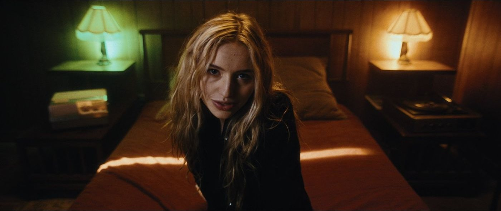
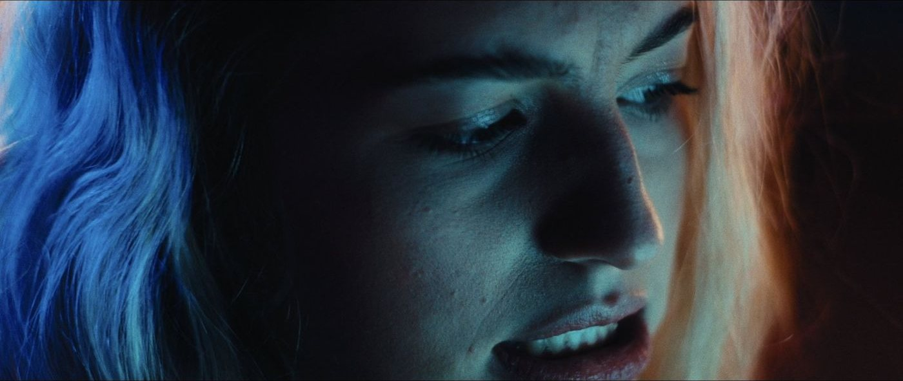
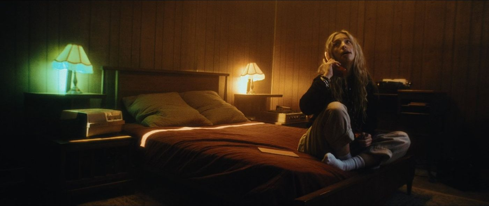
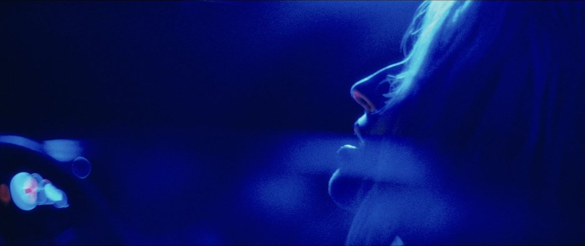
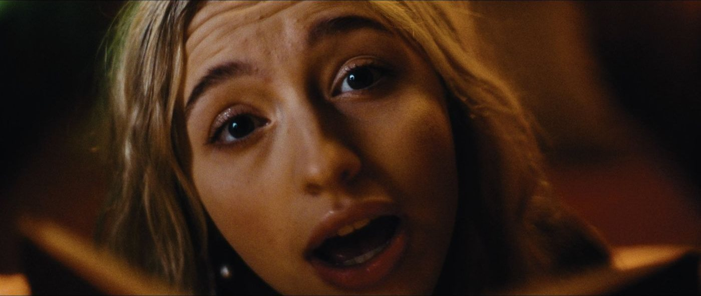
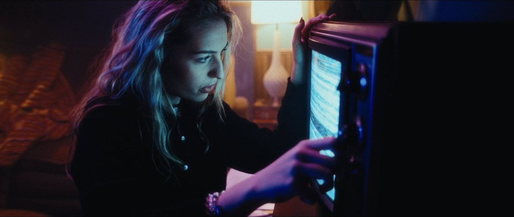

To Each Their Own
 Watch
Watch
- Directed and produced by
- Ty Combs
- Director of photography
- Mitchell Schleper
- On-set stills
- Gina Di Maio
- Management
- Hyphen Media Group
- Label
- Sony Music





